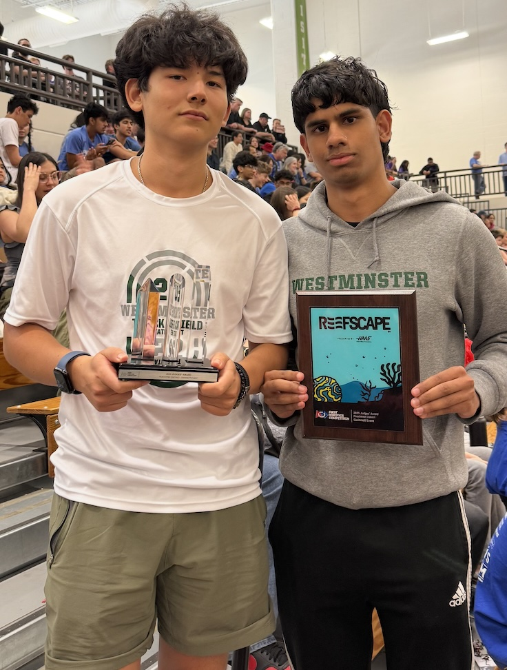
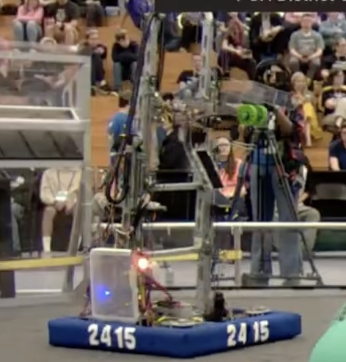

Westminster · FIRST Robotics Competition
Robotics leadership and fabrication
My early experience combining team operations, sponsorship outreach and hands-on competitive robotics design.
Business team leadership
As Business Team Lead, I supported the team's outreach and fundraising efforts, helping connect competition goals with the resources required to build and compete. The original portfolio records more than $10,000 in sponsorships and recognition including a Judges' Award and three Creativity Awards; these are team accomplishments.

Mechanical design and fabrication
I also participated in fabrication and mechanical design, working with Onshape and competitive robot assemblies. Earlier portfolio documentation describes four-wheel swerve-drive work, shop fabrication and rapid repairs during competitions.

Competitive robotics was an important foundation for understanding time-constrained prototyping, coordinated design and the practical difference between a concept and a working machine.